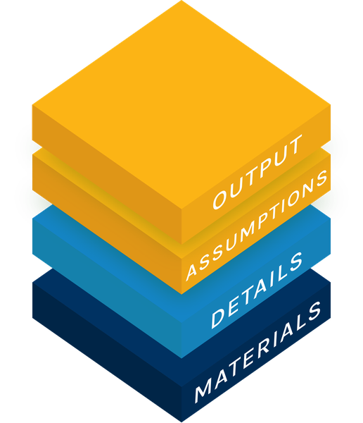

Open Policy Analysis for:

Move the paper's seven scenario dials yourself and watch eleven 2030 outcomes update: all 4374 combinations are precomputed, so every setting is one click.
The paper's claim and machinery, opened up in two forms: read in full, or taught step by step.
The paper's sections in order, every equation explained and recomputed, with the code folded beside each table. All 169 cells of published Tables 3, 5 and 6 reproduce cell by cell; sixteen of them round to a different printed digit (details below).
A slide deck designed to teach the paper's main components, to yourself or to others: the claim, the theory, the machinery and the results, walked equation by equation. Cross-linked into the report for the equations it walks through in detail.
The model, the 129-test validation suite and every exported CSV. The model is
standard library only, no numpy and no scipy; the tests add
pytest, and nothing else is needed to check any number on this
site.
The paper's three scenarios, at the start of 2030. Every figure is a gap against the same US economy without AI, which grows at its ordinary 2 percent a year: "8.3 percent" means 8.3 percent above that path, not 8.3 percent of growth. The workforce is split in two, the AI-sensitive occupations whose tasks AI is assumed to touch and all other occupations.
| In 2030 | No AI | Modest | Substantial | Extreme |
|---|---|---|---|---|
| GDP, pct above the no-AI path | 0 | 1.61.61 | 8.38.28 | 32.432.42 |
| Average wage, pct above the no-AI path | 0 | 0.70.69 | 2.12.14 | 9.79.65 |
| Unemployment rate, AI-sensitive occupations, pct | 2.9 | 2.92.91 | 4.54.50 | 17.917.89 |
| Labor share, pct of income | 60.0 | 59.459.41 | 56.156.10 | 45.245.21 |
Those are the paper's numbers, from its Table 3. This reproduction recomputes every one of them from the printed equations (the smaller figure under each). Nothing in the model assigns the three scenarios probabilities, so the spread between them is the result, not any one column. The table is the four rows of the paper's Table 3 that carry the gains and losses (output, pay, joblessness, the split of income), at the paper's own three settings, so its format is the paper's, not this project's. This project did not pre-specify it: there is no timestamped record of the format from before the reproduction ran.
| Published table | Result |
|---|---|
| Table 3, the three scenarios in 2030 (p. 31) | 20 rows x 4 columns (80 cells: the three named scenarios plus the No-AI baseline), within test tolerance on every cell; two need a widened tolerance, one of them in that No-AI column, and seven round to a different printed digit |
| Table 5, elasticities of capital supply (p. 37) | 5 rows x 8 columns, within test tolerance on every cell, including the pegged-rental case; one cell rounds to a different printed digit |
| Table 6, rigidities of the AI-sensitive wage (p. 38) | 7 rows x 7 columns, within test tolerance on every cell; eight cells round to a different printed digit |
"Within test tolerance" means the reproduced value sits within 0.05 percentage points of the published one for Table 3, widened to 0.10 where the published value is 10 or larger, and within the larger of 0.12 points and 0.4 percent of the published value for Tables 5 and 6; the two Table 3 cells that need it widened get 0.09 points. Rounding to the printed digit is a stricter test, which is why the two are counted separately above.
The repository README lists the sixteen cells that round to a different digit and sets out the readings the paper leaves implicit. A coverage note tracks the paper's reception: press, commentary and any revisions.
This reproduction was a collaboration between the author and Claude Code (Opus and Sonnet models) across many sessions, not an AI working alone. The table records who led the work on each public object, using the CRediT contributor roles, as the author answered them in a questionnaire on 2026-09-23 rather than as inferred from commit history. It groups the 14 roles into three: ideas and direction (conceptualization, methodology, supervision, project administration), doing the work (data curation, formal analysis, investigation, software, validation, visualization) and writing (original draft, review and editing); funding and resources do not apply. Each square in a cell is one role, coloured by who led it (key below the table). The last column, not part of CRediT, is how closely the author has checked the object himself. The role-by-role answers are in CREDIT.md.
| Object | Ideas and direction | Doing the work | Writing | Human verification |
|---|---|---|---|---|
| Explorer Open Output | Understood | |||
| Report Open Analysis | Lightly checked | |||
| Slides Open Analysis | Understood1 | |||
| Repository Open Materials | No human review | |||
| Overview page this page | Understood |
Human verification uses three levels: no human review,
lightly checked (checked, but the author cannot yet explain it clearly) and
understood (he can explain it to others). Separately, the repository contains and runs
129 automated tests: 102 core tests behind Tables 3, 5 and 6, the prose checks and the identities
the equations imply, which the report and the slides share because they present the same
numbers; 7 that pin the explorer's precomputed grid to the model; 16 that recompute the numbers
typed into the explorer and deck prose; and 4 for the slop.py extension, which sits
outside the reproduction. Continuous integration runs them on every push to GitHub, on a clean
machine, and also rebuilds the explorer's grid and fails if the committed copy differs.
The equations and parameters behind those numbers were
transcribed from the paper's PDF by AI into aiscen/. The author reviewed them as
they are presented in the report and the deck, not in the code itself; they have not been
checked against the paper by a second, independent reader, or confirmed with the paper's
authors. The automated tests are mechanical checks, not an outside review. The only other
checks so far are AI review passes, run by the author in fresh sessions, looking for
inconsistencies between the site's pages, the code and the paper's text; they are not an
independent human reading. Where the paper's text left a modelling choice implicit, the
reading adopted here was chosen for internal consistency (see the README).
A separate question, with weaker evidence behind it, is whether the
author can explain each object unaided, without relying on the AI's own explanation of it,
tracked in a private running record. As of the most recent update he rates himself able to do
that for the explorer, for the report's framing, claims and results, and for the slides'
month-by-month numerical solution, but not yet for the equation-by-equation derivation behind
the report and the slides alike, or for the internal layout of the code in
aiscen/. Mechanical verification confirms the numbers match; it does not by itself
confirm he has independently worked through why they should.
Everything of substance on this site belongs to the original analysis: Korinek, Jones, Sacher, Cotter and McCrory (2026), Economic Scenarios for Transformative AI, The Anthropic Institute Working Paper No. 2026-02. The questions, the task-based model, its calibration to US data (their Tables 1 and A.2), the expert survey behind the scenarios (their Section 3.5 and Table 2), the three scenarios themselves and every conclusion drawn from them are the authors' work. This site adds no model, no data and no finding. Its one extension, the AI-slop exercise, is labelled as something the paper does not run.
What this Open Policy Analysis adds is a small contribution of transparency on top of that work. The paper already publishes two of the three layers: an output (its Table 3, its figures and the authors' own scenario explorer on the Anthropic Institute page) and the details of how that output was produced (its 45 numbered equations, the 44-equation monthly system of Table A.1, the simulation procedure of Appendix A and the innovation block of Appendix C). What no reader can do from the paper alone is move between the two: there is no published code that turns those equations into those numbers, so the output cannot be regenerated, a table cannot be checked cell by cell, and an input cannot be changed to see what follows. The materials layer is absent.
So the difference is not in what is claimed but in what can be checked. The reimplementation follows the paper's equations line by line, reproduces its published Tables 3, 5 and 6, and records the few places where the text leaves a choice implicit. Where this site and the paper disagree, the paper's own numbers are shown beside the reproduced ones, and the paper is the reference. Readers who want the analysis should read the paper; this site is for readers who want to see how its numbers come about, and to change them.